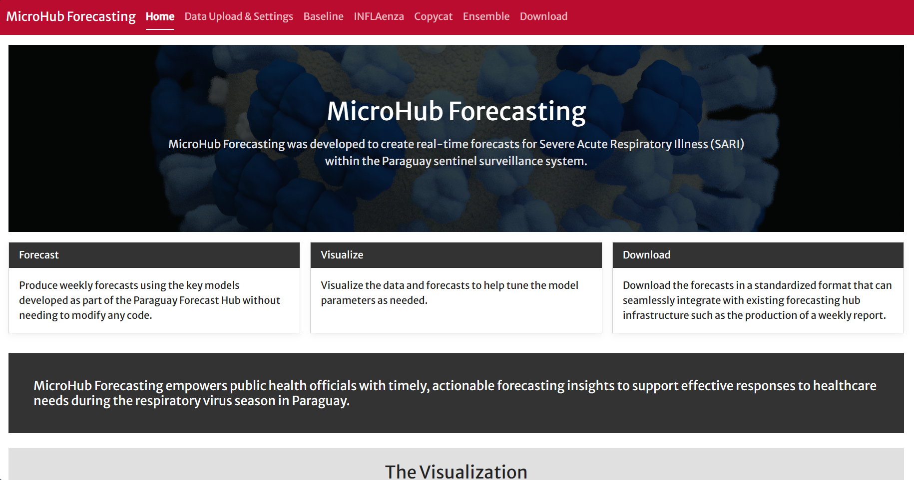

Install MicroHub with Docker Desktop, work through guided outbreak forecasting exercises, compare model behavior, and export hub-ready probabilistic forecasts.

Workshop Flow
Day 1
Install, orient, upload
Confirm Docker Desktop works, open MicroHub locally, inspect the required surveillance data format, and produce first visual checks.
Day 2
Generate forecasts
Run baseline models, tune real-time settings, compare Copycat and INFLAenza, and interpret uncertainty intervals.
Day 3
Evaluate and export
Build an ensemble, download hub-ready outputs, discuss retrospective evaluation, and plan adaptation to local surveillance data.
What Participants Will Need
- Windows, macOS, or Linux laptop with administrator rights for software installation.
- Docker Desktop installed before the first hands-on session.
- Internet access for pulling the MicroHub container image and downloading workshop CSV files.
- Workshop datasets from the Downloads page.
Learning Goals
- Run MicroHub locally using Docker Desktop.
- Prepare surveillance data with
date,target_group, andvaluecolumns. - Understand forecast date, data drop, seasonality, and horizon settings.
- Compare simple baselines with trajectory-matching and Bayesian models.
- Create ensemble forecasts and export hub-compatible outputs.
Editing This Site
This repository is a small pkgdown site. Edit the source files, then rebuild the site:
rmarkdown::render("README.Rmd")
pkgdown::build_site()Common edits:
- Home page:
README.Rmd - Install guide:
vignettes/install.Rmd - Three-day agenda:
vignettes/schedule.Rmd - Exercises:
vignettes/exercises.Rmd - Downloads page:
vignettes/downloads.Rmd - Troubleshooting:
vignettes/troubleshooting.Rmd - Navigation and theme:
_pkgdown.yml - Downloadable CSVs:
pkgdown/assets/downloads/